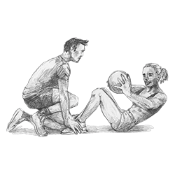

Выбрать тренера
Тренер — залог успеха!
- Легче. Ваш тренер уже прошел путь, который собираетесь пройти вы. Уже боролся с лишними калориями, падением мотивации, болью в мышцах, «плато» в тренировках, и многими проблемами, с которыми вы уже столкнулись или столкнетесь в будущем. Он их уже победил. Наши тренеры — чемпионы, призеры, лауреаты соревнований в различных видах спорта, среди них есть и четырехкратный чемпион мира, и олимпийские чемпионы, и презенторы международного уровня, сертифицированные инструкторы международных институтов. Когда вы занимаетесь в нашем фитнес-клубе с тренером, вас поддерживает человек, который умеет побеждать.
- Полезнее. Тренер знает, как работает ваше тело. Он может оценить степень тренированности, необходимую нагрузку, понять, когда стоит сменить упражнения, а когда — увеличить вес или число повторов. Наши инструкторы специализируются на различных видах тренинга: от сброса лишнего веса до реабилитационных программ и подготовке профессиональных спортсменов к соревнованиям. Мастер-тренеры — универсальные инструкторы, которые владеют различными методиками. Поставьте цель свою цель или выберите одну из наших проверенных 10 программ по целям и двигайтесь к ней вместе.
- Надежней. Хороший тренер — больше мотивации к занятиям. Он не только подбодрит и придаст вдохновения во время тренировок, когда силы, казалось бы на исходе. Он ваш партнер, поддержка и страховка, когда лень, сомнения или занятость попытаются вас победить. В тот момент, когда вы будете колебаться, а не променять ли сегодня фитнес на кино или вечеринку, вы представите укоризненное лицо тренера, и выбрать тренировку будет проще.
- Безопасней. Тренер не даст вам впасть в излишний оптимизм насчет своих возможностей, перегрузить мышцы или получить травму. Он покажет и проконтролирует правильный и безопасный для здоровья способ выполнения упражнения, не важно, делаете ли вы первые шаги в тренажерном зале, осваиваете свободные веса или пробуете новое в функциональном тренинге.
- Эффективней. Диапазон усилий, при котором физическая нагрузка действительно влияет на ваше тело, не такой уж большой, легко выйти и за верхнюю границу, рискуя здоровьем, и за нижнюю, где вы впустую теряете время. Тренер удержит вас в нужном коридоре, так что каждая минута на тренировке будет потрачена с пользой.